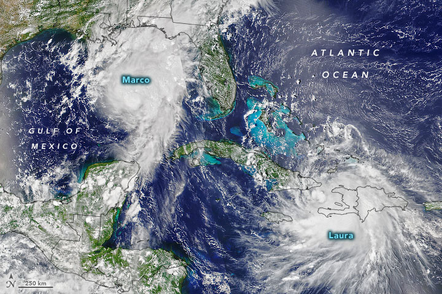
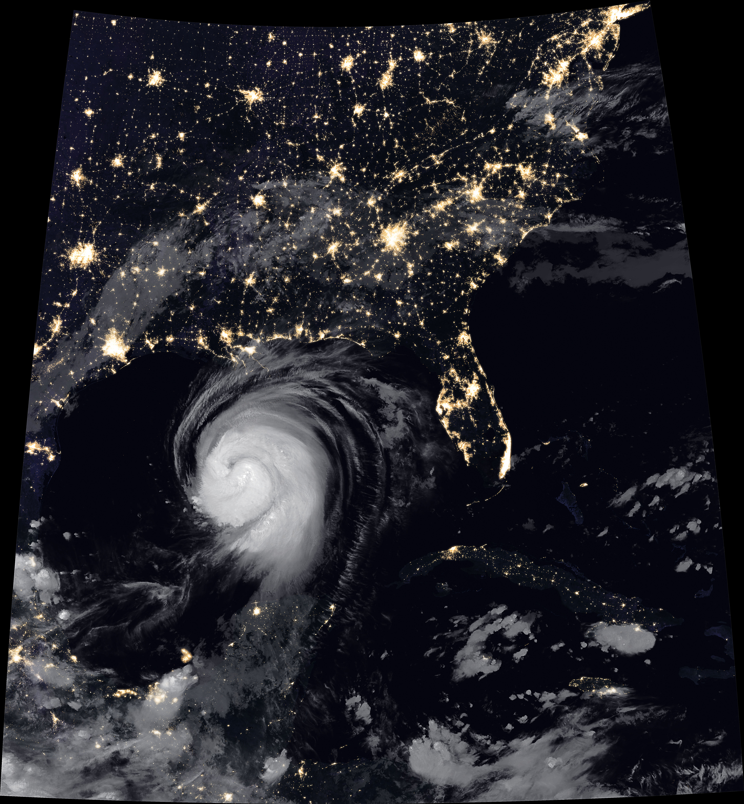
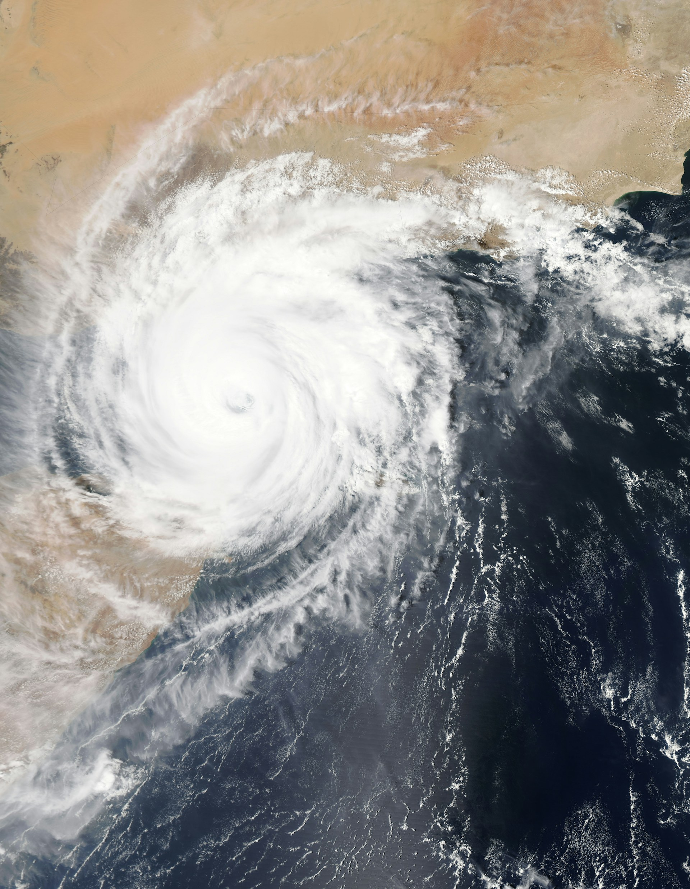
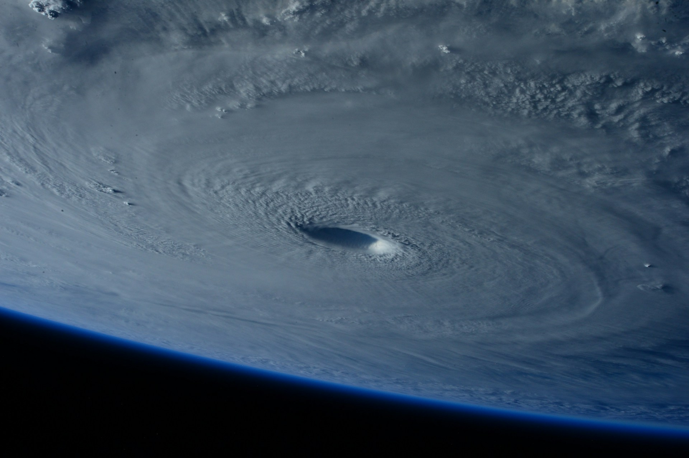
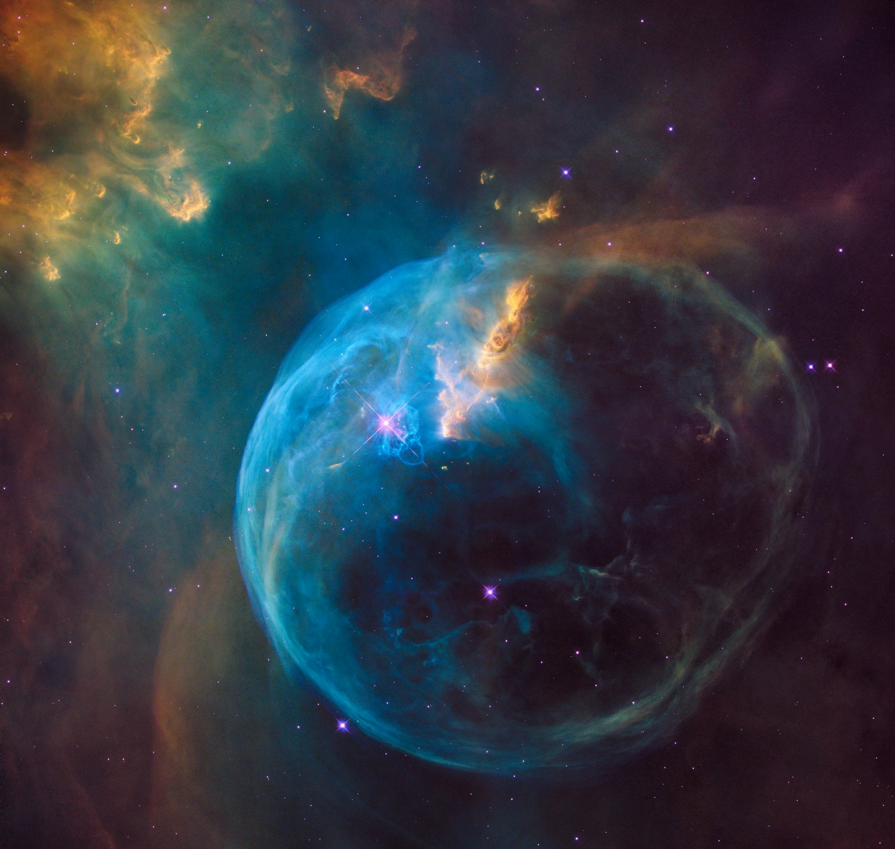
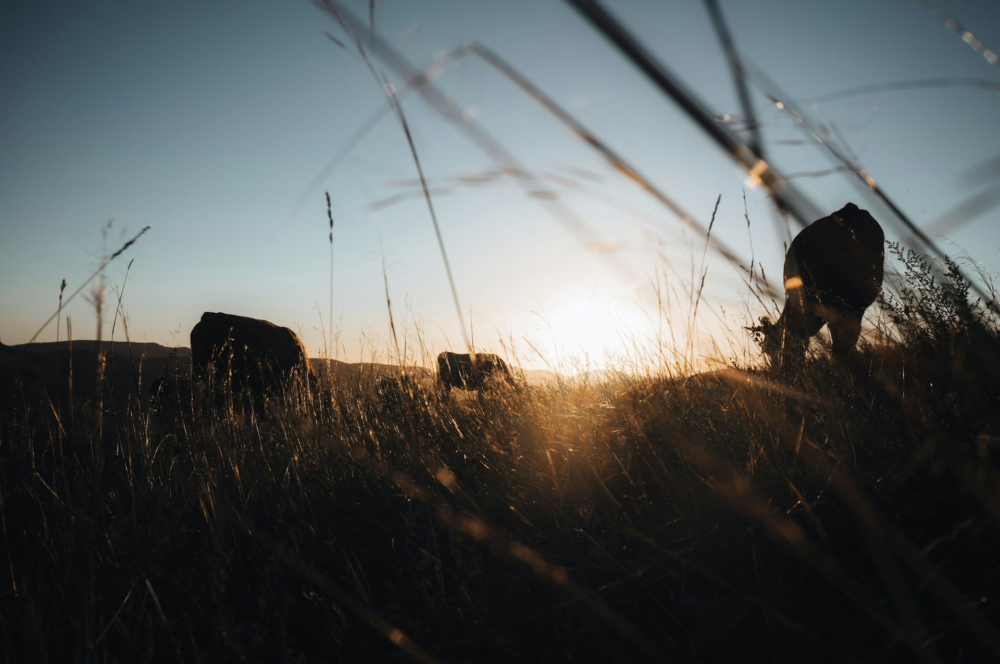
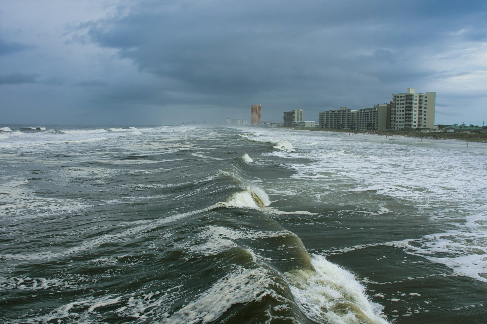
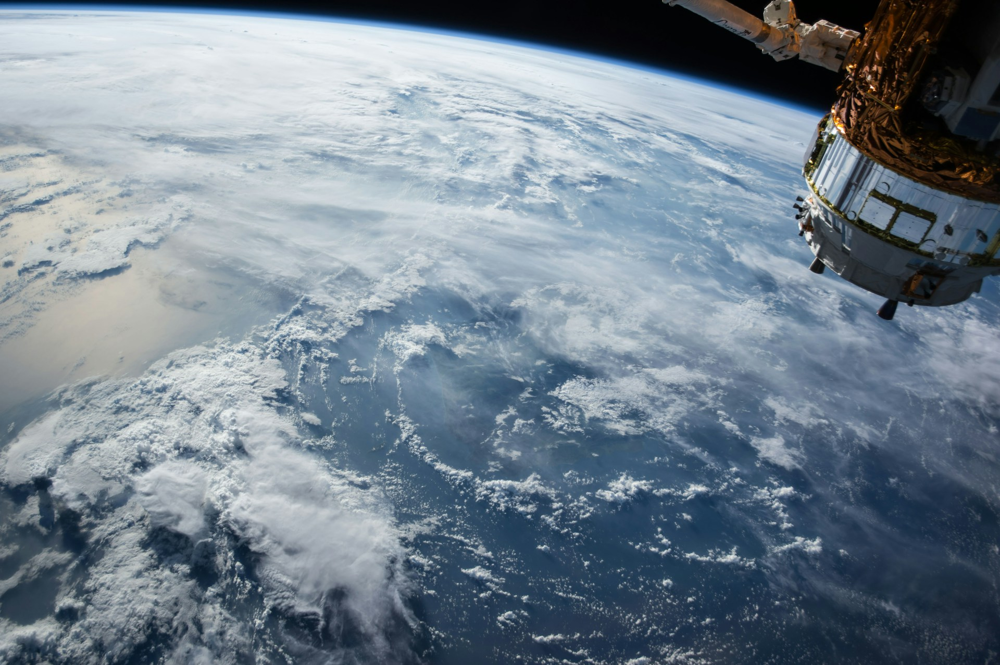

01 NASA — Golfo (Marco y Laura)
Vista satélite desde arriba. Golfo de México, costa visible. La que usamos ahora.
Elige el número (01–10) o el nombre del archivo y dímelo en el chat. También puedes abrir cada imagen en pestaña nueva para verla grande.

Vista satélite desde arriba. Golfo de México, costa visible. La que usamos ahora.

Alta resolución. Tormenta grande acercándose a costa EU/México.

Ojo del huracán visto directamente desde arriba. Muy dramático.

Vista lateral/oblicua (no cenital). Muy icónica.
Nubes oscuras y mar. Más atmósfera, menos “mapa”.

Planeta con nubes. Más abstracto, menos huracán claro.

Cielo cargado. Buen contraste para texto encima.

Siluetas en pastizal. Más emocional, menos “NASA”.

Costa urbana con mar agitado. Inundación/coastal vibe.

Patrón de nubes sobre océano. Suave, no tan literal.